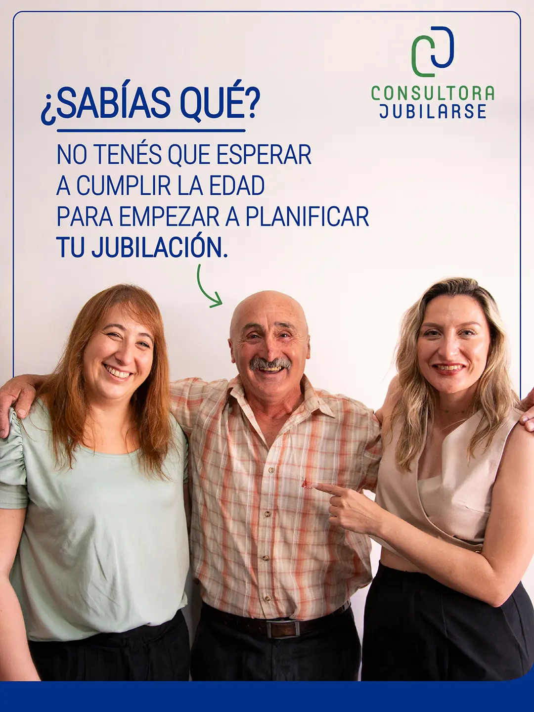
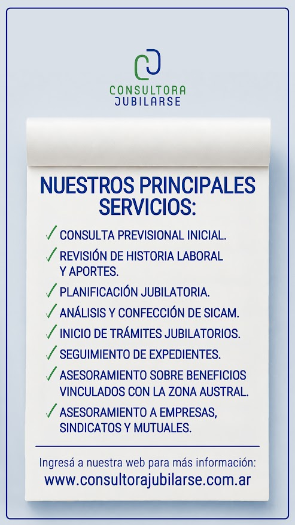
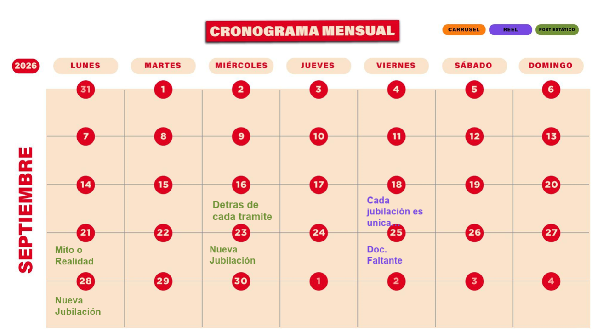

Que te encuentren.
Hacer visibles tus servicios y acercarlos al público al que querés llegar.
MARKETING DIGITAL ORGÁNICO
¿Querés que tus redes acompañen mejor los objetivos comerciales de tu empresa?
Partimos de lo que necesita tu negocio para definir qué comunicar, a quién y en qué canales. Después organizamos el contenido y la producción para sostener ese trabajo.


HISTORIASEL PUNTO DE PARTIDA
Definimos qué interacciones tienen valor para tu empresa: consultas sobre un servicio, visitas al sitio o conversaciones con posibles clientes.
Hacer visibles tus servicios y acercarlos al público al que querés llegar.
Explicar qué hacés, cómo trabajás y qué puede esperar una persona que te consulta.
Facilitar el contacto y conectar el contenido con una consulta concreta.
UNA ESTRATEGIA INTEGRAL
Público, objetivos, mensajes y canales. Con esa base, organizamos los temas, los formatos y el calendario de publicaciones. El alcance de cada proyecto se define según las necesidades de la empresa.
FORMA DE TRABAJO
Un proceso compartido con tu equipo: reuniones online, calendario de contenidos, producción y revisión de resultados.
Nos reunimos por Google Meet para conocer tu empresa, conversar sobre sus necesidades y acordar los objetivos de comunicación.

Armamos con vos un cronograma compartido de temas, formatos y fechas. Coordinamos prioridades y revisamos juntos qué se va a publicar.
Relevamos material fotográfico de forma presencial o recibimos el contenido que nos enviás. Con ese material diseñamos las piezas para redes.
En reuniones online quincenales o mensuales, revisamos el desempeño del contenido y los resultados del mes para acordar los próximos ajustes.
Imágenes ilustrativas del proceso · Cronograma real de Consultora Jubilarse, septiembre de 2026.
EL EQUIPO
La coordinación conecta las decisiones de negocio con la planificación y la producción de comunicación.
PRODUCCIONES REALES
Videos y piezas de Consultora Jubilarse, Cayo Coco y Puerto Cangrejo. Reproducilos acá, sin salir de la página.
CONSULTORA JUBILARSE
Reels y piezas gráficas para acercar la información previsional.
CAYO COCO
Una muestra de producción audiovisual sobre la elaboración de pizzas.
PUERTO CANGREJO
Dos piezas que muestran el espacio, la cocina y la experiencia del restaurante.
HABLEMOS DE TU EMPRESA
Contame qué está pasando con tus redes, qué consultas recibís y qué te gustaría mejorar. Ese es el punto de partida para definir una propuesta.
Consultar por marketing digital